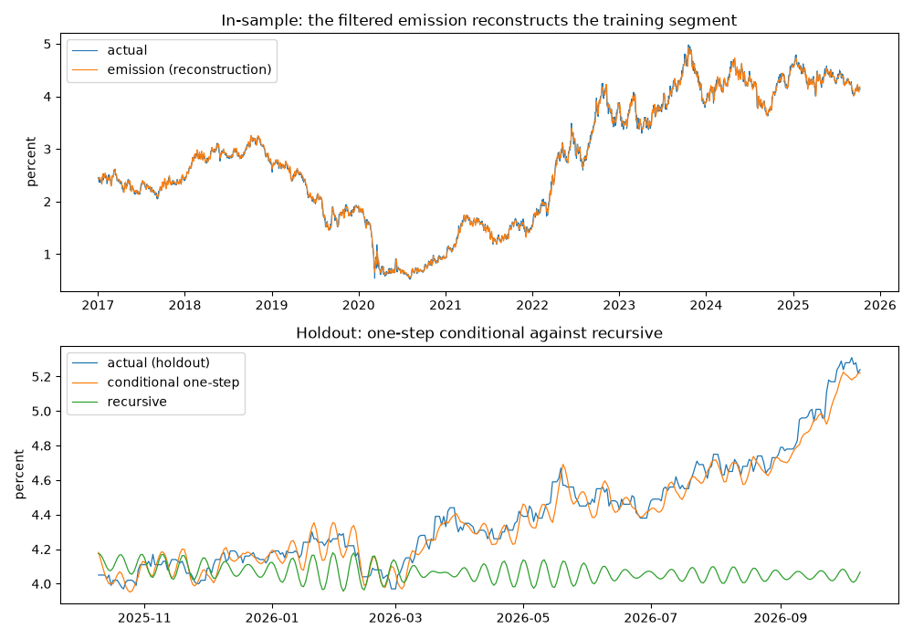
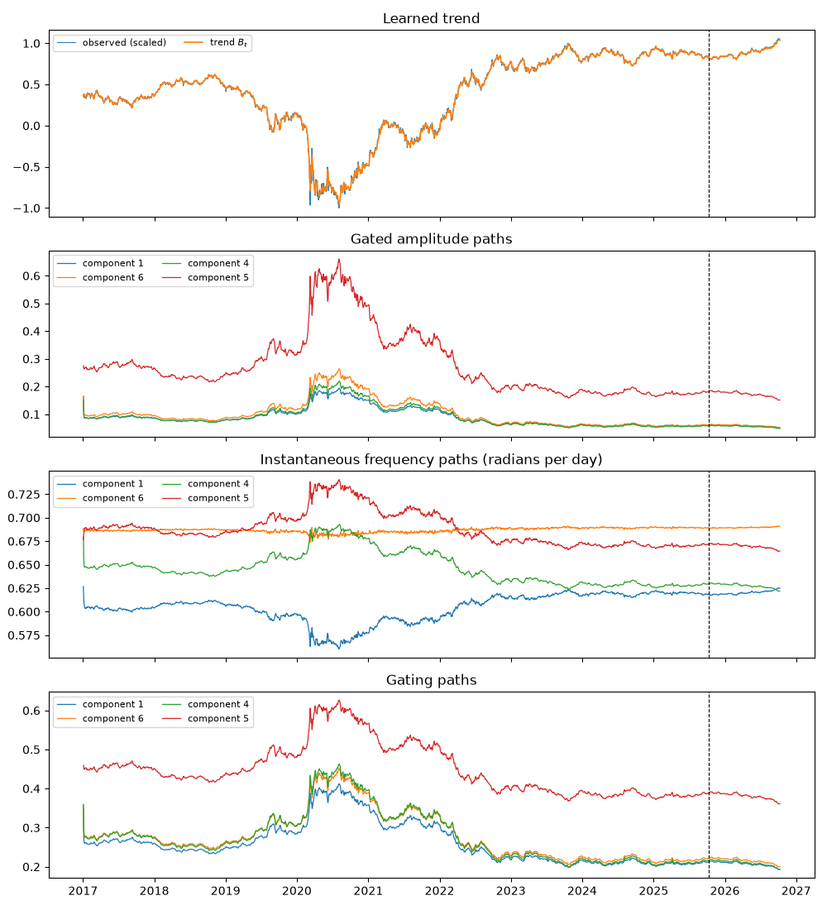
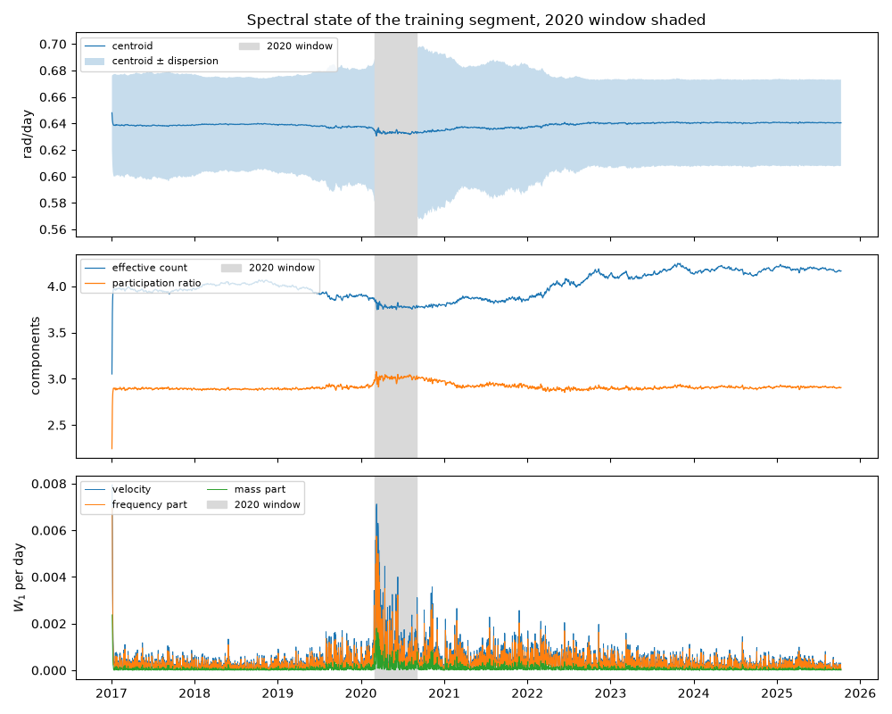

Note
Go to the end to download the full example code.
The 10-year Treasury yield and its spectral state#
The IEEE-ORSS experiment, shortened to fit a documentation build: the 10-year Treasury constant-maturity yield (FRED: DGS10) in logs on a calendar-day grid, the last 365 observations held out, the default filtered alignment, and the published two-stage schedule with its amplitude and frequency drift penalties. The sample starts in 2017 rather than 2000, the network has eight components and a 64-dimensional state rather than sixteen and 128, and the two stages run 150 steps each rather than 1200 and 1800. The reproduction example runs the full protocol.
The example draws the paper’s figures from the result’s paths, computes the holdout metrics against the random walk, and reads the 2020 window in the spectral-state coordinates, which is the interpretive claim the paper makes and the coordinates were built to test.
The data are downloaded live, so the script needs a FRED_API_KEY.
Data#
fetch_series places the quotes on a daily calendar and fills gaps of
up to a week forward, as the paper did. The weekly structure this
introduces is discussed on the nuances page of the user guide; it is
kept here for fidelity to the published run.
import matplotlib.pyplot as plt
import numpy as np
import pandas as pd
from ns_sdn.spectral_decomposition import NSSDN, Penalties, Stage
from _fred import fetch_series
log_yield = fetch_series("DGS10", start="2017-01-01", units="log")
dates = log_yield.index
y = log_yield.to_numpy()
holdout = 365
split = y.shape[0] - holdout
train, test = y[:split], y[split:]
print(
f"{y.shape[0]} observations from {dates[0].date()} to {dates[-1].date()}; "
f"{holdout} held out from {dates[split].date()}"
)
3567 observations from 2017-01-03 to 2026-10-09; 365 held out from 2025-10-10
Fit#
The published penalties on a shortened schedule. seed=1337 is the
paper’s.
NSSDN(k=8) Results
================================================================================================
Model: NSSDN(k=8, d=64, gru, filtered) Log-likelihood: 6622.292
Objective: mse AIC: 16933.416
Scaling: minmax BIC: 108542.033
Observations: 3201 HQIC: 49776.269
Parameters: 15089 One-step RMSE: 0.0305693
Gating: True Emission RMSE: 0.0203324
------------------------------------------------------------------------------------------------
mean amp mean freq period mean gate mix power share
component 1 0.1013 0.6041 10.4 0.262 -0.148 0.509
component 2 0.2694 0.6458 9.7 0.419 -0.010 0.016
component 3 0.1925 0.7000 9.0 0.373 +0.014 0.018
component 4 0.1042 0.6468 9.7 0.277 -0.064 0.106
component 5 0.3161 0.6888 9.1 0.450 -0.019 0.080
component 6 0.1158 0.6868 9.1 0.278 +0.087 0.247
component 7 0.1966 0.6906 9.1 0.333 +0.009 0.006
component 8 0.2258 0.6842 9.2 0.408 +0.013 0.018
================================================================================================
Filtered alignment: the emission at t conditions on y[t], so emission is a reconstruction of the
observed series and fittedvalues report the emission at t as the one-step forecast of y[t+1]
(the published protocol); compare against a random walk before reading them as skill.
llf is a concentrated Gaussian likelihood at a penalized fit and n_params the nominal weight
count; criteria compare k within one configuration only.
Components are identified up to permutation; indices are not stable across refits.
In-sample fit and the holdout, in levels#
Figures 1 and 2 of the paper. The one-step holdout path is predict
over the whole series, read for the holdout rows; the recursive path is
forecast from the end of the training segment.
one_step = res.predict(y)[-holdout:]
recursive = res.forecast(holdout)
naive = y[split - 1 : -1]
def metrics(actual: np.ndarray, predicted: np.ndarray) -> dict[str, float]:
error = predicted - actual
return {
"rmse": float(np.sqrt(np.mean(error**2))),
"mae": float(np.mean(np.abs(error))),
"mape_pct": float(np.mean(np.abs(error / actual)) * 100.0),
}
table = pd.DataFrame(
{
"one-step (log)": metrics(test, one_step),
"one-step (level)": metrics(np.exp(test), np.exp(one_step)),
"recursive (level)": metrics(np.exp(test), np.exp(recursive)),
"random walk (level)": metrics(np.exp(test), np.exp(naive)),
}
).T
print(table.round(4).to_string())
fig, axes = plt.subplots(2, 1, figsize=(10, 7))
axes[0].plot(dates[:split], np.exp(train), lw=0.8, label="actual")
axes[0].plot(dates[:split], np.exp(res.emission), lw=0.8, label="emission (reconstruction)")
axes[0].set_ylabel("percent")
axes[0].legend(loc="upper left")
axes[0].set_title("In-sample: the filtered emission reconstructs the training segment")
axes[1].plot(dates[split:], np.exp(test), lw=0.9, label="actual (holdout)")
axes[1].plot(dates[split:], np.exp(one_step), lw=0.9, label="conditional one-step")
axes[1].plot(dates[split:], np.exp(recursive), lw=0.9, label="recursive")
axes[1].set_ylabel("percent")
axes[1].legend(loc="upper left")
axes[1].set_title("Holdout: one-step conditional against recursive")
plt.tight_layout()

rmse mae mape_pct
one-step (log) 0.0149 0.0120 0.8113
one-step (level) 0.0659 0.0529 1.1959
recursive (level) 0.4658 0.3521 7.5928
random walk (level) 0.0352 0.0231 0.5218
The paths over the full sample, in training units#
Figures 3 to 6. decompose(y, scaled=True) runs the trained network
over training and holdout together and returns the paths in the scale
the network trained on, which is how the paper draws them. Four of the
eight components are shown, chosen by power share.
paths = res.decompose(y, scaled=True)
shown = np.argsort(res.power_share)[::-1][:4]
boundary = dates[split]
fig, axes = plt.subplots(4, 1, figsize=(10, 11), sharex=True)
axes[0].plot(dates, paths["observed"], lw=0.7, label="observed (scaled)")
axes[0].plot(dates, paths["trend"], lw=1.2, label="trend $B_t$")
axes[0].set_title("Learned trend")
for j in shown:
axes[1].plot(dates, paths["amplitude"][:, j], lw=0.9, label=f"component {j + 1}")
axes[2].plot(dates, paths["frequency"][:, j], lw=0.9, label=f"component {j + 1}")
axes[3].plot(dates, paths["gate"][:, j], lw=0.9, label=f"component {j + 1}")
axes[1].set_title("Gated amplitude paths")
axes[2].set_title("Instantaneous frequency paths (radians per day)")
axes[3].set_title("Gating paths")
for ax in axes:
ax.axvline(boundary, color="k", ls="--", lw=0.8)
ax.legend(loc="upper left", fontsize=8, ncol=2)
plt.tight_layout()

The 2020 window in spectral-state coordinates#
The paper reads frequency convergence with amplitude concentration around the 2020 shock. In the coordinates of the spectral state that is a joint contraction of the dispersion and the effective count, and the velocity says when the measure moved. The windows are the six months before March 2020 and the six months from it.
state = res.spectral_state() # training-segment rows; the paths above cover the full sample
coords = state.to_pandas(index=dates[: state.nobs])
before = coords.loc["2019-09-01":"2020-02-29"]
after = coords.loc["2020-03-01":"2020-08-31"]
comparison = pd.DataFrame(
{"before": before.mean(), "after": after.mean()},
).loc[["centroid", "dispersion", "effective_count", "participation_ratio", "velocity"]]
comparison["change"] = comparison["after"] - comparison["before"]
print(comparison.round(4).to_string())
print(f"disentanglement over the training segment: {state.disentanglement_score:.3f}")
fig, axes = plt.subplots(3, 1, figsize=(10, 8), sharex=True)
axes[0].plot(coords.index, coords["centroid"], lw=0.9, label="centroid")
axes[0].fill_between(
coords.index,
coords["centroid"] - coords["dispersion"],
coords["centroid"] + coords["dispersion"],
alpha=0.25,
label="centroid $\\pm$ dispersion",
)
axes[0].set_ylabel("rad/day")
axes[1].plot(coords.index, coords["effective_count"], lw=0.9, label="effective count")
axes[1].plot(coords.index, coords["participation_ratio"], lw=0.9, label="participation ratio")
axes[1].set_ylabel("components")
axes[2].plot(coords.index, coords["velocity"], lw=0.7, label="velocity")
axes[2].plot(coords.index, coords["velocity_frequency"], lw=0.7, label="frequency part")
axes[2].plot(coords.index, coords["velocity_mass"], lw=0.7, label="mass part")
axes[2].set_ylabel("$W_1$ per day")
for ax in axes:
ax.axvspan(
pd.Timestamp("2020-03-01"), pd.Timestamp("2020-08-31"), color="0.85", label="2020 window"
)
ax.legend(loc="upper left", fontsize=8, ncol=2)
axes[0].set_title("Spectral state of the training segment, 2020 window shaded")
plt.tight_layout()

before after change
centroid 0.6372 0.6331 -0.0041
dispersion 0.0450 0.0645 0.0195
effective_count 3.8862 3.7804 -0.1058
participation_ratio 2.9139 3.0098 0.0959
velocity 0.0005 0.0012 0.0007
disentanglement over the training segment: 0.909
Reading it#
A contraction in both dispersion and effective_count across the
window is the compression reading; a fall in one without the other is a
different story, and the disentanglement score says how far the
per-component paths behind it can be trusted. Whatever this shortened
fit shows, the claim rests on the published configuration and on its
stability across seeds; the coordinates are permutation-invariant, so a
seed sweep of the reproduction example is the natural test.
Total running time of the script: (2 minutes 15.001 seconds)